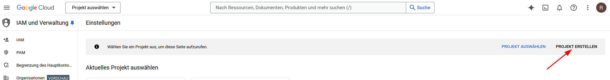
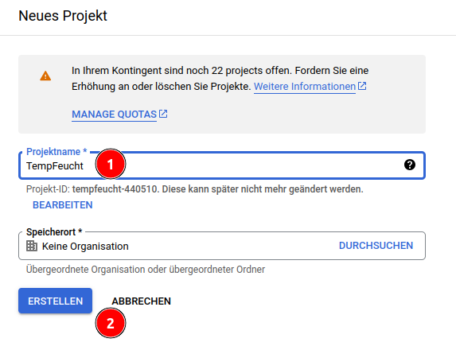

Ein ESP32 soll Temperatur und Luftfeuchtigkeit messen und in einem Tabellenblatt von Google Sheets speichern. Diese Daten können dann von einem beliebigen Rechner über das Internet ausgelesen werden.
Das Vorgehen orientiert sich an dieser Anleitung:
https://randomnerdtutorials.com/esp32-datalogging-google-sheets/
Um Daten in Google Sheets speichern zu können, benötigst einen Google-Account. (https://myaccount.google.com/)
Melde dich damit auf der Google Cloud-Console an: https://console.cloud.google.com/projectselector2/iam-admin/settings
Erstelle ein neues Projekt:

Trage einen sinnvollen Namen ein und klicken auf "Erstellen":

Als nächstes musst du einen Service-Account für dieses Projekt erstellen. Der ESP32 wird diesen Zugang nutzen, um die Daten auf das Google Sheet zu schreiben.
Zusätzlich benötigst du noch einen Schlüssel, um auf das Projekt vom ESP32 aus zugreifen zu können.
Eine API (engl. Aplication Programmiung Interface) ist eine Schnittstelle, über die Programme mit einer Internetseite oder einem anderen Programm interagieren können. Du benötigst zwei verschiedene APIs:
// DHT-Temperatur und Luftfeuchtigkeitsmesser
#include "DHTesp.h"
#include <Arduino.h>
#include <WiFi.h>
// Zeitserver
#include "time.h"
// Google Sheets Client
#include <ESP_Google_Sheet_Client.h>
// For SD/SD_MMC mounting helper
#include <GS_SDHelper.h>
// WLan-Daten
#define WIFI_SSID "Name deines WLANS"
#define WIFI_PASSWORD "Passwort deines WLANs"
// Google Project ID
#define PROJECT_ID "Wert aus der Schlüsseldatei"
// Service Account's client email
#define CLIENT_EMAIL "Wert aus der Schlüsseldatei"
// Service Account's private key
const char PRIVATE_KEY[] PROGMEM = "langer Wert aus der Schlüsseldatei";
// The ID of the spreadsheet where you'll publish the data
const char spreadsheetId[] = "Kopierter Bereich aus der URL des Sheets";
// Timer variables
unsigned long lastTime = 0;
// Alle 30 Sekunden wird ein Messwert geschrieben
unsigned long timerDelay = 30000;
// Token Callback function
void tokenStatusCallback(TokenInfo info);
// NTP server to request epoch time
const char* ntpServer = "pool.ntp.org";
// Variable to save current epoch time
unsigned long epochTime;
// Function that gets current epoch time
unsigned long getTime() {
time_t now;
struct tm timeinfo;
if (!getLocalTime(&timeinfo)) {
Serial.println("Failed to obtain time");
return (0);
}
time(&now);
return now;
}
String getZeit() {
time_t now;
struct tm timeinfo;
if (!getLocalTime(&timeinfo)) {
Serial.println("Failed to obtain time");
return "";
}
time(&now);
char buffer[80];
strftime(buffer, sizeof(buffer), "%d.%m.%Y %H:%M:%S", &timeinfo);
return String(buffer);
}
DHTesp dhtSensor;
TempAndHumidity data;
const int DHT_PIN = 15;
int count = 0;
void setup() {
// put your setup code here, to run once:
Serial.begin(115200);
dhtSensor.setup(DHT_PIN, DHTesp::DHT22);
WiFi.begin(WIFI_SSID, WIFI_PASSWORD);
Serial.print("Connecting to Wi-Fi");
while (WiFi.status() != WL_CONNECTED) {
Serial.print(".");
delay(300);
}
Serial.println();
Serial.print("Connected with IP: ");
Serial.println(WiFi.localIP());
Serial.println();
//Configure time
configTime(3600, 3600, ntpServer);
GSheet.printf("ESP Google Sheet Client v%s\n\n", ESP_GOOGLE_SHEET_CLIENT_VERSION);
// Set the callback for Google API access token generation status (for debug only)
GSheet.setTokenCallback(tokenStatusCallback);
// Set the seconds to refresh the auth token before expire (60 to 3540, default is 300 seconds)
GSheet.setPrerefreshSeconds(10 * 60);
// Begin the access token generation for Google API authentication
GSheet.begin(CLIENT_EMAIL, PROJECT_ID, PRIVATE_KEY);
}
void loop() {
// Call ready() repeatedly in loop for authentication checking and processing
bool ready = GSheet.ready();
if (ready && millis() - lastTime > timerDelay) {
lastTime = millis();
FirebaseJson response;
Serial.println("\nFüge Daten zur Tabelle hinzu...");
Serial.println("----------------------------");
FirebaseJson valueRange;
data = dhtSensor.getTempAndHumidity();
count++;
valueRange.add("majorDimension", "COLUMNS");
valueRange.set("values/[0]/[0]", getZeit());
valueRange.set("values/[1]/[0]", data.temperature);
valueRange.set("values/[2]/[0]", data.humidity);
valueRange.set("values/[3]/[0]", count);
Serial.println("Humidity: " + String(data.humidity, 1));
Serial.println("Temperature: " + String(data.temperature, 2));
bool success = GSheet.values.append(&response /* returned response */, spreadsheetId /* spreadsheet Id to append */, "Tabellenblatt1!A1" /* range to append */, &valueRange /* data range to append */);
if (success) {
response.toString(Serial, true);
valueRange.clear();
} else {
Serial.println(GSheet.errorReason());
}
Serial.println();
Serial.println(ESP.getFreeHeap());
}
}
void tokenStatusCallback(TokenInfo info) {
if (info.status == token_status_error) {
GSheet.printf("Token info: type = %s, status = %s\n", GSheet.getTokenType(info).c_str(), GSheet.getTokenStatus(info).c_str());
GSheet.printf("Token error: %s\n", GSheet.getTokenError(info).c_str());
} else {
GSheet.printf("Token info: type = %s, status = %s\n", GSheet.getTokenType(info).c_str(), GSheet.getTokenStatus(info).c_str());
}
}